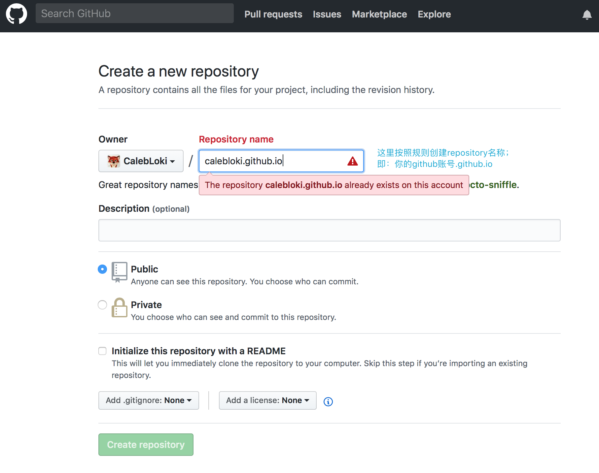

事情起源于那天我想写篇关于纸牌屋里各个主角的吐槽，在Evernote上写完后发现要分享给朋友需要她也有账号，遂打算找个博客贴一下，本来打算用作业部落，但发现传图居然要收费……然后发现各类主流博客各种难用……要么是注册后2小时之后才能发表文章，要么是注册可见……
(ノಠ益ಠ)ノ彡┻━┻ ，于是就有了这里……
嗯，先简单列个大纲，要是没有你需要的东西也可以节省点时间ʕ•͡•ʕ•͡•ʔ•͡•ʕ•͡•ʕ•͡•ʔ•͡•
- 注册github；
- 按照GitHubPage规则新建Repositories；
- 下载Node.js；
- 安装Hexo环境；
- 本地发布和测试；
- 部署到Git实现线上访问；
- 扩展配置
绑定个人域名；
更换主题；
2.1 主题配置
2.2 设置个人头像
2.3 创建about，tags和categories标签；
设置404页面；
设置网页图标；
为Sublime Text 3 添加Markdown插件；
发表带图片的文章；
设定LaTeX公式支持； - 问题集锦(不定期更新):
- 安装hexo遇到npm ERR! 404 Not Found: hexo-cil
- 执行git 出现xcrun: error: invalid active developer path
- 更换主题后无法加载css样式
- 首次更换主题页面字体（或语言）奇怪显示问题
- hexo多tag分割
注册GitHub
[略] 我相信你肯定是知道这些东西是什么才会来看的对吧_(:3JZ)_
按照GitHubPage规则新建Repositories

这里我已经建过了，所以提示我已经存在；
将这个repository clone到你本地；
在根目录下创建一个名为 index.html 的文件，随便写点什么，然后push；
如果不出意外现在已经完成了，你获得了一个能通过外网访问的静态页面；
访问地址：https://youname.github.io
它看起来是这样的……
咳咳是有点苍白，那么前戏到这里就差不多了；
下载安装Node.js
官网下载然后安装……没啥好说的；
安装Hexo 环境
首先要明确安装Hexo需要两个前置条件；
- Git
- Node.js
不是很确定可以在终端检查一下，分别执行如下命令
(下文中所有命令除非特别说明，否则横杠后没有空格)；
1 | $ node -v |
能看到以下结果（你的版本号可能和我不一样……感觉好聒噪= =|||）：
继续执行以下命令：
1 | $ npm install -g hexo-cli |
完毕之后照例检查一下版本号，如果能看到信息说明安装正确；
1 | $ hexo -v |
找一个路径作为你以后hexo的惯用路径，接下来文章发布，主题配置什么的都会在这下面进行；
接着对它进行初始化操作，执行以下命令：
1 | $ hexo init |

完毕后会看到路径中新增了以下文件：
_config.yml // 全局配置
db.json
node_modules
package-lock.json
package.json
public // 项目发布路径
scaffolds
source // 类似于web工程的src路径，如果你不知道这是啥也没关系，暂时理解为存放源文章的路径即可
themes // 主题路径
至此，我们的环境可以算是搭建完成了，现在就可以开始本地发布文章进行测试了；
本地发布和测试
现在重点关注hexo下的source目录，里面还有一个二级目录_posts，这里才是存放文章的地方；
进去之后随便用什么工具新建一个md文件，内容写点开工祝语啥的；然后保存，现在你的目录看起来应该是这样的：
简单介绍下hexo的常用命令：
hexo cl // 清除缓存，每次执行它可以确保你部署的主题样式和页面展示为最新的；
hexo g // 生成本地文件；
hexo s // 本地发布测试；
hexo d // 进行线上部署；
目前我们先用前三个；
按顺序执行以下命令：
1 | $ hexo cl |
解释下命令的作用：

可以看出，hexo支持命令的简写，如果在执行完generate之后没有看到ERROR信息的话，本地部署已经完成，这时可以执行本地启动hexo命令：
1 | $ hexo s |
这时可以看到hexo已经启动了，如果以前用过tomcat之类的话应该很熟悉这个页面：
记得不要关闭这个终端窗口，这时候你已经在本地浏览器访问你的新博客了；
访问地址：http://localhost:4000/
其实到这里，我们已经完成了80%的工作，如果你够懒，可以把它扔到git上，然后用刚刚的 youname.github.io 这个域名就能直接访问了；
部署到Git实现线上访问
打开刚刚hexo根目录下的_config.yml 文件，找到以下节点进行修改；
1 | # Deployment |
找到 deploy:
这个节点，配置按照上面进行就行，repository地址写你刚刚在git上建立的能实现线上访问那个地址；
保存后在根目录下执行：
1 | $ hexo d |
如果你使用的是ssh方式clone的项目，这里就能直接提交到你线上的git仓库里了；
提交完毕之后，用最开始的 https://youname.github.io 访问即可；
扩展配置
作为一个富有xjbgd精神的工程师，自然不会满足用一个大众的域名用一个大众的模版作为自己网络上精神家园的配置了，既然这是记录咱们成长的一个地方，所以自然要鼓捣一番；
配置个性化域名
首先你要有个男朋友，阿不，有个域名；
这个我就不多说了，万网，美橙什么的有很多可以搞到域名的地方，我用的万网的，就单说下它的配置方式：进入控制台 —> 解析DNS标签 —> 添加域名 —> 解析设置 —> 添加解析

需要说明的是，就我实验的情况：CNAME，www，@ 这三个解析都需要配置并指向正确的地址，否则域名会无法解析；
除此之外，还有一个问题，想要通过你自己的域名直接解析到 youname.github.io 这个地址，还需要在你的repository里做一个配置，如下图所示，在你要发布的根目录（主意我图里的路径，不是hexo目录）下建一个没有后缀的CNAME文件，内容就是你自己的域名：
更换主题
+ 主题配置
选择一个主题，我用了这里的一个，也可以去其他地方找一个；
进入刚刚hexo下的themes目录，可以看到这里有一个默认主题landscape，不用理他新建一个目录，建议和刚刚你选择的repository同名，然后在这个目录下完成clone；
接着回到hexo目录，修改_config.yml的 theme: 节点；
1 | # Extensions |
另外需要注意的是，不同的主题似乎对文章的标题读取方式都不一样，但个人猜测大同小异，刚开始遇到了 主题不能识别文章标题 的情况，需要我们在_posts下面的md文件遵循一定的格式，栗如我的这个主题需要这样的格式：
1 | --- |
配置好主题之后重新执行一次刚刚的 hexo cl g s 序列命令，然后在首页你就能看到效果了；

+ 设置个人头像
这个主题的头像在主题的目录里（咦好像很废话）；
如下图所示，用你自己的头像图片替换 default_avatar.jpg 这个文件就行了；
刚刚大致浏览了下配置文件，似乎没有发现里面有指定头像路径或者名字的地方；然后我尝试了下把图片重命名，头像就失效了；所以这里还是按这个名字来命名吧；
+ 创建about,tags和categories标签
首先注意下这几个标签的配置在主题的目录下的配置文件里，也就是这里：/Users/foxman/Documents/macworkspace/hexo/themes/magiclamp/_config.yml
然后按照配置上说的，在根目录下建立对于的同名目录；
1 | menu: |
完成后目录结构应该是这样的：
1 | hexo/ |
完成之后在各自的目录下新建一个 index.md 文件作为标签的索引，about内容可以随意填写，但注意tags 和categories的内容需要对文档类型进行声明，否则不会有联动效果；
tags:
categories:
设置404页面（待完成）
使用gitPage设置404页面其实很简单，但这里我遇到了一个问题；
先说下可以直接生效的方式：
准备一个不需要引用外部样式的html页面，命名为 404.html 然后放到repository和CNAME文件同名的目录下就行了（也就是根目录下面）；
但有一个问题，如果直接放到这个目录下面，当你下次更新文章的时候，这个目录是会被完全覆盖更新的；所以我在避免每次更新重新上传CNAME文件的时候，是把它放到了 /hexo/source/ 下面;
但这个方法并不适用于404页面；
或者准确的说，当我使用了这个主题之后，如果直接放到根目录下，第二次更新hexo就会被覆盖，如果按照CNAME的方式来操作，你会看到这样的效果…（记得 cl - g - d)
emmmm 而我真正想要的404页面应该是这样的:
大概花了两个小时我都没有找到合适的解决方式，所以这个问题先放一放；
设置网页图标
这个做法和CNAME文件一样，找到一个你喜欢的ico格式的图标，和CNAME放到同一级目录下，命名为 favicon 重新执行一次部署上传的命令序列，就能看到效果了；
为Sublime添加Markdown插件
嗯，做这个的目的是为了写md格式的博文，当然你有自己钟爱的Markdown编辑器也可跳过这段_(:3JZ)_
大致步骤如下：
Step 0: 为Sublime 安装pakage control；
Step 1: 通过pakage control 安装 Markdown Editing和Markdown Preview；
Step 2: 睡觉，阿不开始用Sublime编辑md文件；
Step 0: 安装pakage control
通过这里可以确认你的Sublime是否有安装pakage control：
顶端菜单栏：Sublime Text —> Preference —> Pakage Control
如果没有的话你的菜单看起来是这个样子的：

官网是这样解释的：点我跳转_(:3JZ)_
原谅我的懒惰粘贴一下：
The simplest method of installation is through the Sublime Text console. The console is accessed via the `ctrl+`` shortcut or the View > Show Console menu. Once open, paste the appropriate Python code for your version of Sublime Text into the console.
Text 3 的操作(emmmm 谁告诉我Markdown语法怎么自动拆行)：
1 | import urllib.request,os,hashlib; h = '6f4c264a24d933ce70df5dedcf1dcaee' + 'ebe013ee18cced0ef93d5f746d80ef60'; pf = 'Package Control.sublime-package'; ipp = sublime.installed_packages_path(); urllib.request.install_opener( urllib.request.build_opener( urllib.request.ProxyHandler()) ); by = urllib.request.urlopen( 'http://packagecontrol.io/' + pf.replace(' ', '%20')).read(); dh = hashlib.sha256(by).hexdigest(); print('Error validating download (got %s instead of %s), please try manual install' % (dh, h)) if dh != h else open(os.path.join( ipp, pf), 'wb' ).write(by) |
Step 1: 安装 Markdown Editing和Markdown Preview
Pakcage Control安装完毕后，使用 command + shift + p 就能唤出package control的控制栏，在里面找到Markdown Editing和Markdown Preview即可；
完成之后重启一次Sublime，就能看到效果啦；
发表带图片的文章
这个相对简单，首先确认主配置文件中有 post_asset_folder: true ；
然后注意一下你想要发布的文章的路径配置即可；以我上篇纸牌屋的博文为栗子，确保目录结构如下：
1 | hexo/source/_posts |
在文章中遵循以下语法：
在好莱坞，如果说吉姆-凯瑞是脸善变的演员，那凯文-斯贝西绝对是性格善变的演员。凯文的演技深沉，内敛，独树一帜，出神入画的演技，性格各异的角色给人留下深刻的印象。（emmmm左边的照片总让我想起另一个人……）

他尤其擅长饰演各种阴险狡诈的反派人物，出演过大量道德上有问题的人物，是著名的黑色演员。
如果你熟悉Linux应该能看出括号里是一个表示当前目录的相对路径，想要使用绝对路径可以自己测试一下；
另外还有一个语法是可以实现鼠标悬停后显示提示文字的效果；语法如下：
1 |  |
具体效果可以参看本博文中 设置404页面 章节里的两幅图片；
设定LaTeX公式支持
当然了，作为一只合格的CS狗（emm其实也不算），自然公式也是平常的文章中必不可少的元素了；
这个比较简单，大部分的主题内置了支持，只需要配置一下即可，找到主题（themes）目录下的_config.yml修改以下节点,将enable的value改成true即可；
1 | # MathJax Support |
然后你就能看到逼格满满的公式啦，like this：
$${J(\theta_0,\theta_1)=\frac{1}{2m}\sum^{m}_{i=1}(h_0(x^{(i)})-y^{(i)})^2}$$
至此，Mac环境下借助GitPage通过hexo搭建个人博客就算完成了，开始写下第一篇文章记录你的技术成长道路吧ʕ•͡•ʕ•͡•ʔ•͡•ʕ•͡•ʕ•͡•ʔ
问题集锦
这里简单记录下整个过程中遇到了并解决的问题：
npm ERR! 404 Not Found: hexo-cil
这是我在安装hexo的时候遇到的提示，网上转了很久，还有人说因为hexo的安装需要翻墙什么的……
总之：
0：至少我没有翻墙解决这个问题；
1：原因是因为我git出现了一些问题；
原谅我当时忘记截图了，当时找了很久无果后，最终去官网看了下文档，说到了hexo必要的两个前置条件：git 和Node.js 于是乎执行了下 $ git 发现了报错，解决后这个问题也跟随解决了；
执行git 出现xcrun: error: invalid active developer path
嗯是的，这是在解决上面的问题的时候遇到的；
xcrun: error: invalid active developer path (/Library/Developer/CommandLineTools), missing xcrun at: /Library/Developer/CommandLineTools/usr/bin/xcrun
解决方法：
打开终端输入
1 | xcode-select --install |
回车后，系统弹出下载xcode，点击确认，下载完成后即可。
好吧我又懒惰的粘贴了一下，但解决这个问题确实只执行了这个操作便成功了；
更换主题后无法加载css样式
眼瞎没看清楚配置里的注释说明：
1 | # URL |
去掉了这个child路径
emmmm 注释里好像说清楚了只怪我自己没看清楚；
另外多嘴一句，更新样式或者直接保持一个好习惯，每次执行的第一个命令都是 hexo cl 这样能确保每次部署的时候都按照最新的配置和样式表进行部署；
hexo多tag分割
1 | tags: [git,hexo] |
比如我这篇：
后记
(:3JZ) 算了不想腻歪了，就这样吧，吼吼
ʕ•͡•ʕ•͡•ʔ•͡•ʕ•͡•ʕ•͡•ʔ•͡• ʕ•͡•ʕ•͡•ʔ•͡• ̫•ʕ•͡•ʔ•͡• ʕ•͡•ʕ•͡•ʔ•͡ •ʕ•͡•ʕ•͡•ʔ•͡• ʕ•͡•ʕ•͡•ʔ•͡• ʕ•͡•ʕ•͡•ʔ•͡• ʕ•͡•ʕ•͡•ʔ•͡• ʕ•͡•ʕ•͡ •ʔ•͡• ʕ•͡•ʕ•͡•ʔ•͡• ʕ•͡•ʕ•͡•ʔ